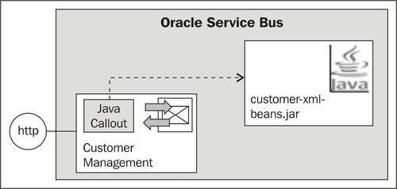
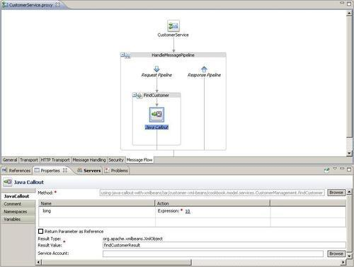
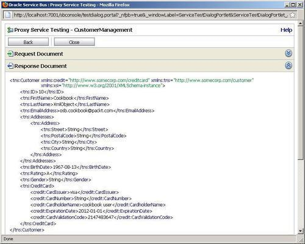
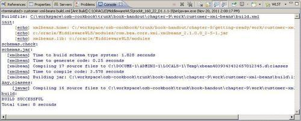
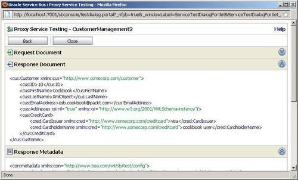

In this recipe, we will show how to use a Java Callout action to invoke a Java method, which will return XML messages. We have already seen that a Java method can return Java primitives or String values in the Using the Java Callout action to invoke Java code recipe. But the Java Callout action can also work with Apache XMLBeans, which allows us to directly pass XML message from a Java method to an OSB proxy service and vice versa, without having them serialized from String to XML. The Oracle Service Bus natively works with these XMLBean objects.
We will implement a proxy service which invokes a Java class inside a JAR using the Java Callout action, as shown in the following screenshot:

The Java class will format an XML message using Apache XMLBeans and return it to the proxy service. The message is then returned to the caller of the proxy service.
You can import the OSB project containing the base setup for this recipe into Eclipse OEPE from \chapter-9\getting-ready\using-java-callout-with-xmlbeans\using-java-callout-with-xmlbeans.
We will first create the Oracle Service Bus project. In Eclipse OEPE, perform the following steps:
proxy folder, create a new proxy service and name it CustomerService. FindCustomer.Now we first have to create the Java class, which will use XMLBeans to create an XML message, which will then be returned to the proxy service through a Java Callout action. In Eclipse OEPE, perform the following steps to create a Java project to hold the Java class:
java into the Wizards field, select the Java Project node and click Next. customer-xml-beans and click Finish.To be able to work with XMLObjects, we need to add the Apache XMLBeans JAR file to the build path of the new Java project. In Eclipse OEPE, perform the following steps:
<ORACLE_HOME>\modules\ and select the following JAR file: com.bea.core.xml.xmlbeans_2.1.0.0_2-5-1.jar (actual version of the library while writing the book). cookbook.model.services into the Package field. CustomerManagement into the Name field and click Finish.public static XmlObject findCustomer(long id) throws XmlException {
String customer = String
.format("<?xml version=\"1.0\" encoding=\"UTF-8\"?>\n"
+ "<tns:Customer
xmlns:credit=\"http://www.somecorp.com/creditcard\"
xmlns:tns=\"http://www.somecorp.com/customer\"
xmlns:xsi=\"http://www.w3.org/2001/XMLSchema-instance\">\n"
+ "<tns:ID>%s</tns:ID>\n"
+ "<tns:FirstName>Cookbook</tns:FirstName>\n"
+ "<tns:LastName>XmlObject</tns:LastName>\n"
+ "<tns:EmailAddress>osb.cookbook@packt.com
</tns:EmailAddress>\n"
+ "<tns:Addresses>\n"
+ "<tns:Address>\n"
+ "<tns:Street>String</tns:Street>\n"
+ "<tns:PostalCode>String</tns:PostalCode>\n"
+ "<tns:City>String</tns:City>\n"
+ "<tns:Country>String</tns:Country>\n"
+ "</tns:Address>\n"
+ "</tns:Addresses>\n"
+ "<tns:BirthDate>1967-08-13</tns:BirthDate>\n"
+ "<tns:Rating>A</tns:Rating>\n"
+ "<tns:Gender>String</tns:Gender>\n"
+ "<tns:CreditCard>\n"
+ "<credit:CardIssuer>visa</credit:CardIssuer>\n"
+ "<credit:CardNumber>String</credit:CardNumber>\n"
+ "<credit:CardholderName>cookbook user
</credit:CardholderName>\n"
+ "<credit:ExpirationDate>2012-01-01</credit:ExpirationDate>\n"
+ "<credit:CardValidationCode>2147483647
</credit:CardValidationCode>\n"
+ "</tns:CreditCard>\n" + "</tns:Customer>\n",
Long.toString(id));
XmlObject customerXmlObject = XmlObject.Factory.parse(customer);
return customerXmlObject;
}
This method receives an ID and will return an XML message back. In order to be able to call the Java method from an OSB proxy service, we first have to create a JAR archive. In Eclipse OEPE, perform the following steps:
java into the Select an export destination, select JAR file and click Next. jar folder inside the using-java-callout-with-xmlbeans OSB project, enter customer-xml-beans.jar into the File name field and click Save.Now we can continue with the implementation of our proxy service. In Eclipse OEPE, perform the following steps:
jar folder by pressing F5 and check that the JAR file created previously is located inside the jar folder. customer-xml-beans.jar inside the jar folder and click OK. 10 into the Expression field. findCustomerResult into the Result Value field.
Let's add a Replace action to return the result in the body variable.
$findCustomerResult into the Expression field. body into the In Variable field.Let's test the proxy service by performing the following steps in the Service Bus console:
proxy folder inside the using-java-callout-with-xml-beans project.
This recipe showed how we can use the Java Callout action of the OSB to call a Java method which does not return Java primitive or String values, but whole XML messages using Apache XMLBeans. Inside the Java method, we just used normal String concatenation operations to first build the XML fragment as a String object and then we have used the XMLBean Factory to parse the string into an XMLObject.
The Java class is then made available to the proxy service as a Java Archive.
We can also use XMLBeans to generate Java classes based on XML schema definitions and then use these generated classes in our Java class to build the XML document to return to the proxy service. This really simplifies the creation of the XML message compared to the approach of using String concatenation shown previously.
We will use an Ant script to first perform the generation of the Java classes. In Eclipse OEPE, perform the following steps:
build.xml and build.properties files from the \chapter-9\getting-ready\using-java-callout-with-xmlbeans\misc folder into the root of the customer-xml-beans project. build.properties file and configure the paths so they match the environment. schemas folder from \chapter-9\getting-ready\using-java-callout-with-xmlbeans\misc folder into the root of the customer-xml-beans project. build.xml build script and select Run As | Ant Build.The Ant build generated the necessary Java classes representing the XML type definitions of the XML schemas. It also created a JAR file inside the build/lib folder. Now let's use the generated Java classes to build the corresponding XML message instead of the String concatenation used previously. In Eclipse OEPE, perform the following steps:
public static CustomerTyp findCustomerObject(long id) {
CustomerDocument custDoc =
CustomerDocument.Factory.newInstance();
CustomerTyp customer = custDoc.addNewCustomer();
customer.setID(id);
customer.setFirstName("Cookbook");
customer.setLastName("XmlObject");
customer.setEmailAddress("osb.cookbook@packt.com");
customer.setAddresses(null);
CreditCardDocument creditDoc = CreditCardDocument.Factory.newInstance();
CreditCardTyp creditCard = creditDoc.addNewCreditCard();
creditCard.setCardholderName("cookbook user");
creditCard.setCardIssuer(CardIssuerTyp.VISA);
customer.setCreditCard(creditCard);
return customer;
}
customer-xml-beans.jar from the build/lib folder so that it is regenerated with the next run of the Ant build script. build.xml build script and select Run As | Ant Build.
customer-xml-beans.jar into the jar folder inside the using-the-java-callout-with-xmlbeans Oracle Service Bus project.Now let's clone the proxy service from above and change it so that the new Java method is used in the Java Callout action. In Eclipse OEPE, perform the following steps:
proxy folder and select Paste. CustomerManagement2.proxy into the field. /using-java-callout-with-xmlbeans/proxy/CustomerManagement2. customer-xml-beans.jar inside the jar folder and click OK. 10 into the Expression and click OK. findCustomerResult into the Result Value field.Test the CustomerManagement2 proxy service through the OSB Test console. The output should represent the XML message we have created with the new method.

Building the XML message in the Java class is much easier and less-error prone through the Java classes generated by XMLBeans than through the String concatenation. There is an additional effort for creating the Java classes and for keeping them up-to-date if the XML schemas change, but this effort is worth it, comparing the two methods shown here with the usage of the String concatenation and the usage of the generated Java classes representing the XML schema types.